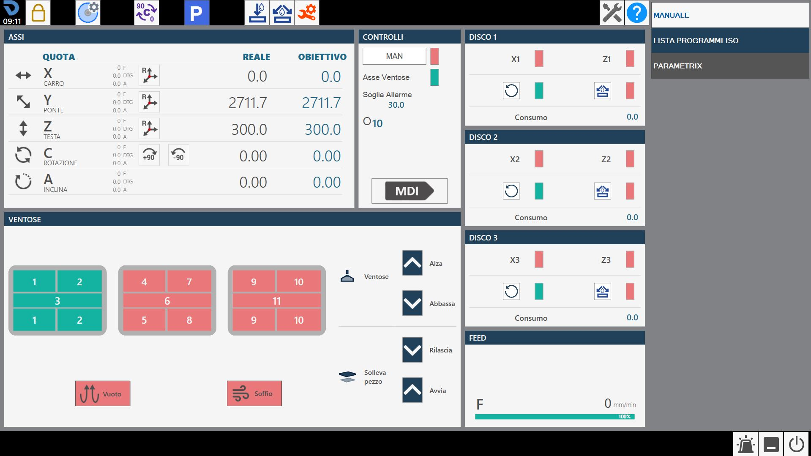
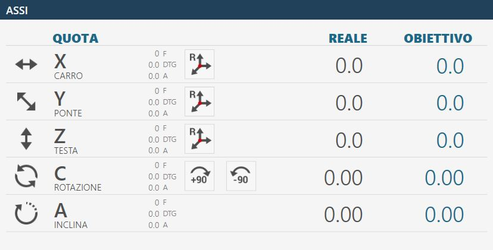

When the application starts, if the axes have already been homed, the following initial screen is displayed:

WARNING!
When starting the machine, extreme care must be taken when moving axes before the homing procedure has been carried out; collisions with the machine mechanical limit stops could occur and compromise correct operation.
Parameters Provides access to the Parametrix program parameters.
Parameters tool Pressing the button opens the tool parameters page. See the “Tool Configuration” chapter for a detailed description of the parameters page.
Automatic rotation 0/90 degrees The “C” axis is automatically moved to 0 or 90 degrees when the button is pressed.
Automatic parking When pressed, the machine automatically moves the “X”, “Y”, “Z” and “C” axes to their zero positions. The machine movements are performed in the following order: (A) - “Z” axis to the absolute zero position; (B) - “C” axis to the absolute 0 position; (C) - “X” and “Y” axes simultaneously to the absolute Zero position;
WARNING!
To perform automatic parking, certain safety conditions must be met:
The “A” axis position must be at 0_.
Make sure that the movement area involved in positioning (see figure alongside) is clear.
Zero Homes the axes (this operation is required when the machine is started or when the rectangular indicators are red). When the homing cycle is complete, the indicators turn grey. The homing procedure moves the axes sequentially:
Z axis
A axis
C axis
X and Y axes simultaneously
B axis (Optional: controlled lathe)
NOTE
Homing is permitted only when the coded key is inserted in the appropriate station on the operator console.
Internal water On/Off Pressing this button activates the water supply from inside the tool. The indicator above the button changes colour: Green = On; Red = Off.
Water On/Off Pressing this button activates the water supply from the main line. The indicator above the button changes colour: Green = On; Red = Off.
Manual Tool Change Pressing the button starts the tool change procedure.
Maintenance Pressing this button displays a window containing all machine maintenance operations. Both maintenance operations that must be carried out and those within normal limits are displayed. If at least one maintenance operation requires.
Help Pressing this button slightly changes the appearance and behaviour of all buttons currently visible. You can then press any button showing a small question mark in the top-left corner to display a short message explaining its function. To exit this help mode, simply press the “Help” button again.
Example of the “Axes” interface element with origin 0 and the axes already homed:

Example of the “Axes” interface element with origin 0 and the axes still to be homed:
The elements that make up this section of the common interface are explained below, using the elements shown with the axes already homed as reference.
Actual position: indicates the axis position relative to the active origin. Target position: indicates the position to be set in order to move the axis by pressing the MDI or RTCP button. F: Feed, movement speed expressed in mm/min. DTG: Distance To Go, distance from the target. A: Amperes.
Reset Axis Pressing this button sets the zero point of the active origin at the current position of the corresponding axis (X, Y or Z). The axis reset operation can only be performed on origins other than 0 (zero). To use the tool-coordinate origin (TCP), the correct dimensions of the mounted tool must be set before pressing the Reset Axis button.
Automatic rotation _90 degrees The “C” axis position is increased by 90 degrees clockwise. Example: if the machine is at 12 degrees, pressing the “Automatic rotation _90 degrees” button moves the machine to 102 degrees: 12 _ 90.
Automatic rotation -90 degrees The “C” axis position is decreased by 90 degrees counter-clockwise. Example: if the machine is at 102 degrees, pressing the “Automatic rotation -90 degrees” button moves the machine to 12 degrees: 102 - 90.
This panel contains several buttons whose functions are described below:
MAN (Enable manual movement) To use the machine in manual mode, the spindles must be positioned correctly and certain functions must be enabled. The button is provided for this purpose.
NOTE
When manual operation is enabled, the adjacent indicator LED turns green.
Suction Cup Axis Reference axis on which the suction cups are mounted.
Ampere threshold Indicates the threshold above which the alarm is activated and spindle rotation is stopped.
Selected origin Clicking the “Origin” field allows the operator to change the origin to be used. Changing this field triggers an update of the Axes values. Origin values can range from 0 to 19 inclusive.
MDI When pressed, the machine moves until the positions set as target positions are reached (see above). The speed of the X and Y axes is controlled by their respective potentiometers, while the other axes are controlled by the interpolated potentiometer.
Only one of the windows available to the operator for managing the installed disks is shown below, as the others provide similar functions.
First reference axis First reference axis for each disk (in the example, X1 for DISK1)
NOTE
When positioning the X axes, the reference used for the target
position is the centre of the disk; the current position differs by half the disk core thickness.
Second reference axis Second reference axis for each disk (in the example, Z1 for DISK1)
Start/Stop spindle rotation Controls switching the disk of the corresponding spindle on and off. The disk speed is selected in the tool parameters.
Enable/Disable spindle external water Allows the water supply for the selected tool to be started and stopped.
Intake Indicates the current drawn by the spindle motor.
Enable / disable suction cups The screen shows a top view of the suction cup assembly and the various zones into which it is divided. Pressing the relevant area changes its status. Green indicates that the zone is set for vacuum. Red indicates that the zone is set for blowing.
SUCTION CUPS: UP - Suction cup parking When the button is pressed, the suction cups are retracted into the rest/parking position.
SUCTION CUPS: DOWN - Prepare suction cups When the button is pressed, the suction cups are lowered from the parking position to the limit stop. It is important that the suction cups have enough space to extend fully.
LIFT PIECE: RELEASE - Piece unloading When the button is pressed, the Z axis is lowered until the material contacts the work surface, the vacuum pump is switched off and all suction cups are blown to release the piece. After a time-out, the axis is raised to the safety position.
LIFT PIECE: START - Piece lifting With this command, the suction cups are brought into contact with the material, the vacuum pump is switched on in the areas marked in green and blowing is activated in the areas marked in red. When the vacuum switch indicates that the vacuum has been generated, the axis is raised to the position set for movement.
WARNING!
Pay attention to the active suction cups and use the largest possible area to lift the piece.
VACUUM - Vacuum pump command This button switches the vacuum pump on and off. The indicator shows whether the pump is on (green) or off (red).
BLOW - Blow command The button switches blowing on or off for the suction cups that are not set for vacuum. The indicator shows whether blowing is on (green) or off (red).
Pay particular attention to the active suction cups during lifting, making sure that the areas used are sufficient to lift the piece being moved. Always try to use the largest available vacuum area to grip the piece and check that the material has no defects or breakages that could create hazards or machine operating problems. Once the vacuum pump has been switched on, it can only be switched off using the automatic functions provided for this purpose. Pressing the reset button or the emergency stop mushroom button has no effect on the vacuum pump, which will continue to operate. The pump can be forced off using the dedicated button on the “Additional Commands” page. In automatic procedures, before lifting the piece, the vacuum status is checked by a dedicated sensor: if a sufficient vacuum level is not detected, the “vacuum missing” alarm is displayed. The pump remains active until the vacuum switch detects a correct value, or until it is disabled from the “Additional Commands” page.
WARNING!
Loss of power to the vacuum pump causes a rapid loss of vacuum and consequently causes the material lifted by the suction cups to fall.
The bottom bar displays information and error messages as well as several buttons for specific functions. Three examples of the bottom bar are shown below:
With no active alarms.
With a general emergency enabled, shown with an icon, an error code (PE0000 in this case), the corresponding description, and the alarms button on the right flashing.
With a message displayed; in the example, direct JOG active.
Alarms Allows the operator to access the alarms window.
Software minimisation Allows the operator to exit the software page.
Machine shutdown Allows the operator to shut down the machine completely.
The alarms page shows the active system Alarms/Messages. If the machine has no active alarms, the page is empty; otherwise, one row is displayed for each error present. The following example alarm management and display page shows an active alarm in the system: